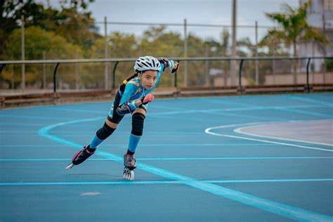

El patinaje sobre ruedas puede desarrollarse en diversas superficies (una pista de hormigón, una calle, una plaza, etc.). Los patines tradicionales cuentan con dos ejes de cuatro ruedas cada uno, mientras que los patines en línea (también conocidos como rollers) presentan las cuatro ruedas en un mismo eje. En el caso del patinaje sobre hielo, los patines disponen de una cuchilla.
Hay competiciones de velocidad, en las que los deportistas participan de una carrera para llegar en primer lugar o registrar el menor tiempo. También existe el patinaje artístico, con un jurado que evalúa las piruetas y los movimientos de los patinadores. El patinaje también aparece en deportes como el hockey sobre patines y el hockey sobre hielo. Además de todo lo expuesto, no podemos pasar por alto tampoco la existencia del llamado patinaje callejero. Divertirse y desplazarse de manera cómoda y rápida por la ciudad son los objetivos fundamentales de esta disciplina que se realiza mediante el uso de unos patines de bota dura. Incluye distintas variantes, como sería el caso, por ejemplo, del night skating, que es la que se practica por la noche. De esta manera se evita el gran volumen de tráfico y transeúntes, lo que supone que se pueda circular en patines con mucha mayor seguridad. De la misma forma, no hay que olvidarse de otra variedad muy significativa dentro del patinaje que, en los últimos años, está consiguiendo un incremento notable del número de personas que lo practican. Se trata del freestyle slalom.
Esta variante del patinaje en línea consiste fundamentalmente en realizar distintos trucos, demostrando la coordinación o la velocidad, en torno a unos conos de plástico que se colocan uno detrás de otro. En Europa es donde está consiguiendo un gran éxito esta modalidad, en la que juegan un papel fundamental tanto la música como la técnica que tenga el patinador. Por supuesto éste tiene que demostrar además su fluidez, su ritmo y su estilo.
Asimismo podemos mencionar al roller derby, un deporte de patinaje sobre ruedas que es propio de Estados Unidos y que se identifica también por ser de contacto, requiriéndose un gran trabajo en equipo. Se desarrolla en una pista de forma oval y suele ser femenino. El patinaje sobre hielo se lleva a cabo sobre una superficie de hielo, bien sea natural o artificial. En el caso de superficie artificial, se utilizan recintos cerrados llamados pabellones o palacios de hielo que pueden contar con graderías para acoger competiciones deportivas de las diversas especialidades de patinaje sobre hielo. En los últimos años se están popularizando las llamadas pistas de «hielo sintético». Una superficie en la que se puede patinar como en cualquier otra, pero que no es de hielo, sino de polietileno; un tipo de plástico muy resistente. Desde la llegada del hielo sintético (también llamado hielo ecológico) en la década de los 60, su evolución ha sido espectacular, llegando incluso a alcanzar una similitud del 95 % con el hielo convencional. Además, su uso está proliferando en muchas pistas domésticas, donde el consumo eléctrico es un factor importante a tener en cuenta. En este sentido, la Asociación Nacional de Patinaje sobre Hielo de Gran Bretaña., la federación británica de patinaje, aprobó, y recomienda, estas pistas para su uso. Entre las ventajas de las pistas de hielo sintéticas está el hecho de que su montaje y mantenimiento son muy baratos, ya que no requiere de consumo eléctrico, a lo que habría que sumar que hablamos de un material reciclable. Se desarrolla en superficies distintas del suelo, por lo general de asfalto, hormigón, terrazo o parqué que, a su vez, pueden tener una capa de rodadura en material plástico, por lo cual este deporte se convierte en un deporte verdaderamente difícil. El patinaje sobre ruedas se puede desarrollar en lugares específicos, como pistas o circuitos; o bien en lugares no específicos habilitados para la ocasión (como sucede con calles y carreteras en las pruebas de larga distancia).
Los patines de ruedas pueden ser de dos tipos: el clásico, conocido también como quad, que tiene cuatro ruedas colocadas por parejas en dos ejes; y el patín en línea, que tiene una disposición similar a los patines de hielo; sustituyendo la cuchilla por una guía que sostiene un número variable de ruedas (entre dos y cinco) situadas una a continuación de otra, este deporte lo puedes practicar tanto mujeres como hombres. El patinaje es un deporte 1 que consiste en deslizarse sobre una superficie regular mediante unos patines colocados en los pies. Quien practica esta disciplina es denominado «patinador profesional» y lo hace en pistas para patinar, también conocidas como «patinódromos» o «patinaderos».2
En 1733 el neerlandés Hoans Brinker construyó la primera rueda metálica para patines, pero no imaginaba que tendría el auge que tiene hoy en día. En 1857 fueron abiertas dos pistas de patinaje en Covent Garden y Strand, dos zonas muy importantes del centro de Londres. En 1876 se abre el primer centro de patinaje en París como deporte de moda. En 1905 se funda la Amateur Hockey Association en Inglaterra.En 1909 se comenzó a jugar este deporte en el condado de Kent. En 1924 se reúnen representantes de Suiza, Francia, Alemania y Gran Bretaña fundando al Federation International Du patinage a roulette En 1946 se crea la Federación Española de Hockey y Patinaje y España debuta en competencias internacionales en 1947 en Lisboa. Los holandeses fueron, sin duda, los precursores del patinaje. Ya en el siglo XIII empezaron a utilizar los canales para mantener la comunicación patinando de pueblo en pueblo. Con el tiempo, el patinaje se extendió a través del canal hasta Inglaterra, y pronto empezaron a formarse los primeros clubes y pistas artificiales. Entre los amantes del patinaje se encuentran varios reyes de Inglaterra, María Antonieta, Napoleón III y el escritor alemán Johann Wolfgang von Goethe
 Ancla al título Ir a la segunda página